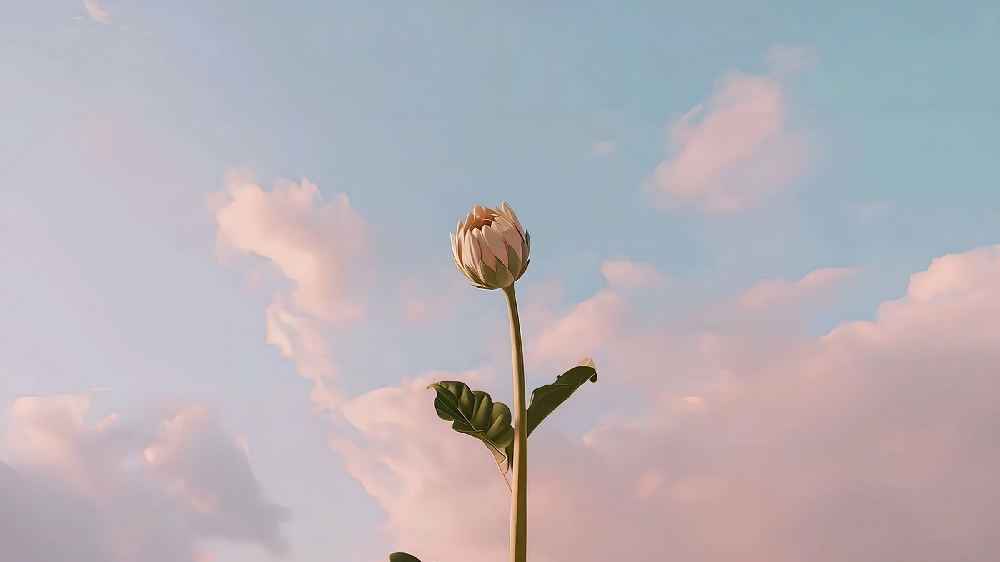
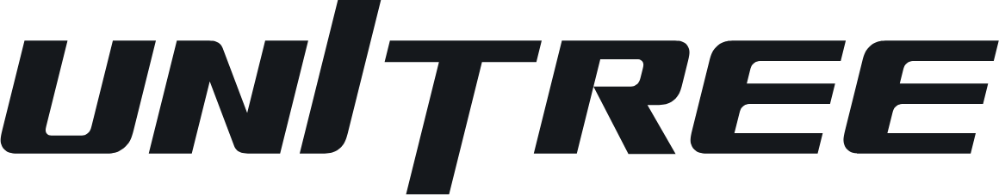
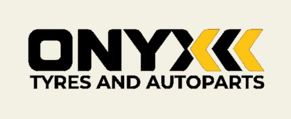

[ Apps · incubated here ]
Rise.
We incubate software here too. Rise is the operating system for regulated-care compliance.
Backed through
[ Partners ]
Who we work with.








And we design and build our own machines too.

Thank you.
365 St Pauls Terrace, Fortitude Valley, Brisbane · wonderbytech.com
Pictures marked Concept, Visualisation or Design drawing show work that is not built yet. The two pictures of Pepper with a child are renders of our room. Fonzie Abbott's, Little Red Dumpling's and Rise's marks are their own.